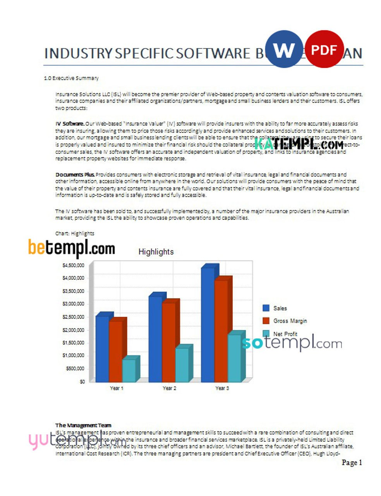
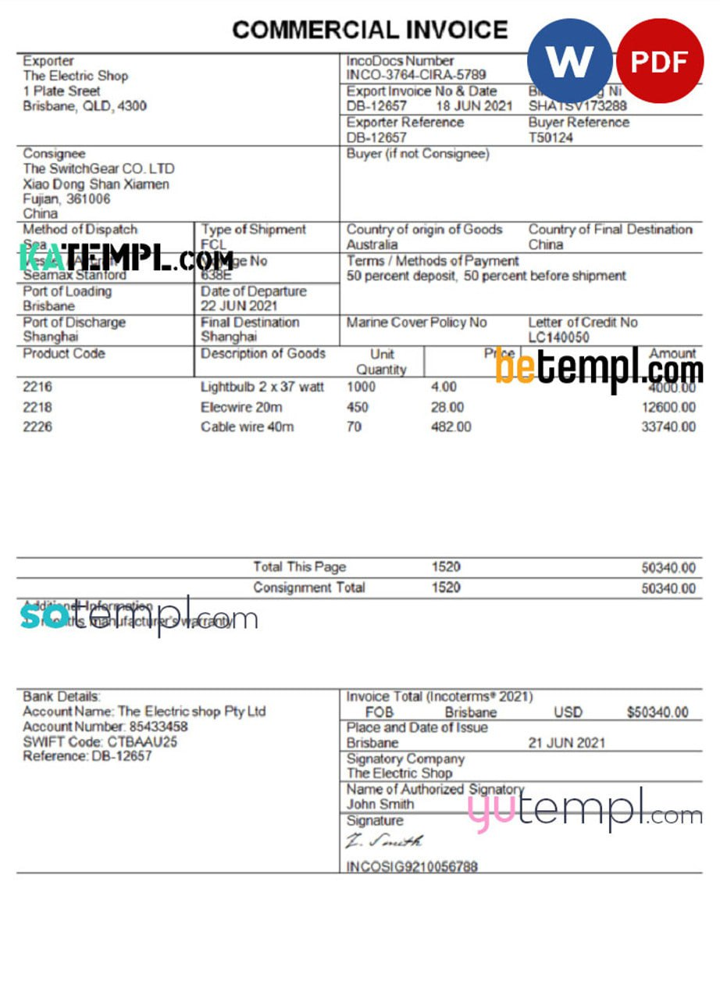

How to Create an Effective Business Plan for a Food-Tech Startup: The Role of AI and Order Management
Abstract
This report explores the role of editable templates—specifically business plan templates, customer
orders
templates, and invoice templates—in supporting the growth of food-tech startups. Emphasis is placed on
how
AI
technologies complement these templates to enhance planning, order management, and financial accounting.
Templates are designed with clear layers, editable fields, and beginner-friendly structures, making them
practical tools across multiple countries and regions.
Introduction
Food-tech startups operate in a fast-changing environment where operational efficiency and financial
clarity
are
critical. A clear business plan, accurate tracking of customer orders, and professional handling of
invoices
are
essential for success. Traditional manual approaches often waste time and introduce errors. Editable
templates
provide a structured solution that reduces complexity and improves professionalism.
The aim of this report is to demonstrate how these templates, when combined with AI-driven solutions,
can
form a
reliable system for food-tech entrepreneurs.
Method
The approach to using templates was based on three main components:
1. Business Plan Templates
o Structured with layers that are clearly named.
o Editable fields for company name, address, financial goals, and project dates.
o Simple layouts designed for beginners but adaptable for advanced users.
o Available for Germany, Switzerland, New York, and other markets.
2. Customer Orders Templates
o Organized with fields for order ID, customer details, delivery address, and dates.
o Easy to modify and scalable for increasing order volume.
o Minimalistic design reduces user errors and confusion.
o Available for New Zealand, UAE, and other regions.
3. Invoice Templates
o Editable layers for company information, payment terms, and invoice numbers.
o Professional formatting suitable for client-facing documents.
o User-friendly for beginners, requiring no advanced design knowledge.
o Available for Spain, Thailand, Singapore, and other countries.
AI tools were integrated to analyze business data, predict demand, and automate quality checks on
financial
documents.
Results
The adoption of templates produced the following outcomes:
• Efficiency Gains: Founders saved significant time when preparing plans, tracking
orders,
or issuing invoices.
• Error Reduction: Editable fields and clear naming of layers reduced formatting
mistakes
and data entry errors.
• Scalability: The templates supported both local and international operations,
adapting
easily to different
countries.
• AI Integration: Predictive analytics improved business planning, while automation
ensured
accuracy in order
tracking and invoice management.
Discussion

The findings suggest that editable templates offer both structural and psychological benefits to
food-tech
entrepreneurs. By lowering the technical barrier, these templates allow founders to focus on strategy,
customer
satisfaction, and innovation.
AI further strengthens this system by automating repetitive tasks. For example:
• AI tools refine
business plan templates by suggesting financial adjustments.
• Predictive models enhance customer orders templates through delivery time optimization.
• Automated checks improve the accuracy of invoice templates before they are sent to clients.
The combination of templates and AI creates a robust ecosystem for food-tech startups, balancing
simplicity
with
intelligence.
Conclusion

Editable business plan templates, customer orders templates, and invoice
templates provide food-tech startups
with essential tools for organization, growth, and professionalism. Each template is designed to be
user-friendly, clearly layered, and adaptable across multiple countries.
When combined with AI, these templates transform into dynamic tools that support strategic planning,
order
management, and financial accounting. This approach reduces errors, saves time, and strengthens
confidence
for
entrepreneurs entering competitive markets.
Key Highlights
• Business plan templates simplify startup planning.
• Customer orders templates ensure smooth order management.
• Invoice templates create professional and accurate billing.
• AI integration improves forecasting, order tracking, and financial transparency.